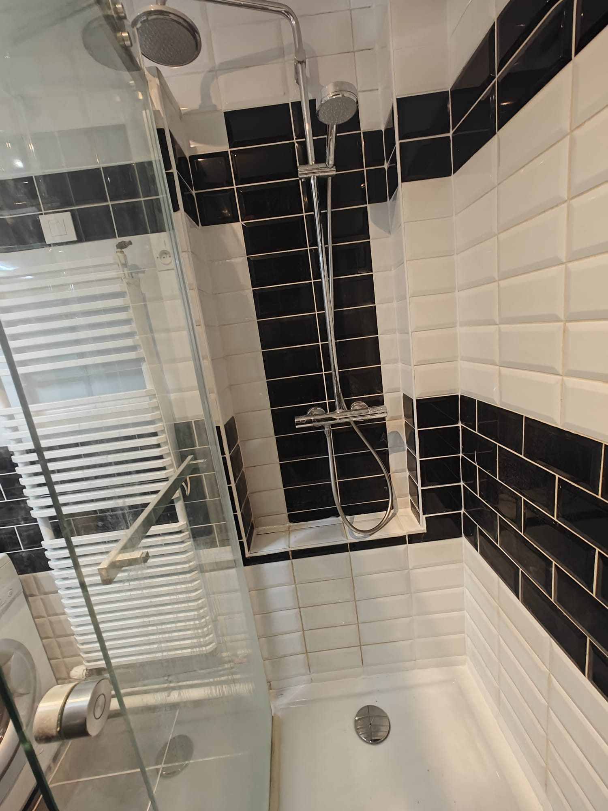
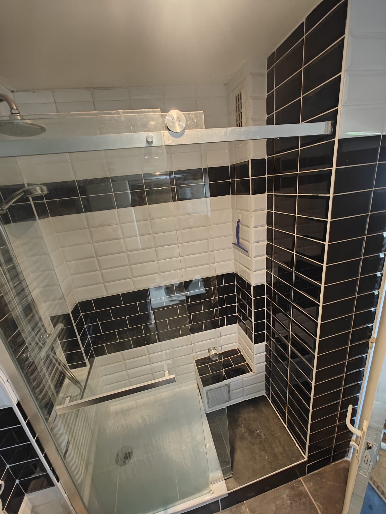

Fuite colonne fonte SME DN100 en salle de bains, dégât des eaux chez le voisin du dessous — rapport assurance, remplacement colonne, reprise carrelage. Prestation tout compris en 3 jours. Le compte-rendu complet par Khaled, technicien SOS FONTE.
Vincennes (94) — remplacement colonne fonte SME DN100 salle de bains + reprise carrelage, 2026.
Par Khaled · Technicien spécialiste fonte, SOS FONTE · 2026
Contexte
Le dégât des eaux depuis une colonne fonte est un cas à part dans le monde des canalisations d'immeuble. Ce n'est pas seulement un problème technique — c'est aussi un problème juridique et financier. Il engage simultanément la responsabilité du copropriétaire dont la canalisation a fui, celle du syndic si la colonne est une partie commune, et nécessite un rapport technique précis pour que l'assurance puisse intervenir.
Mal géré, ce type de sinistre peut s'étirer sur des mois : contestation sur l'origine de la fuite, refus de prise en charge partielle ou totale par l'assureur, litige entre voisins. La clé d'une résolution rapide tient presque entièrement à la qualité du rapport technique produit avant les travaux.
C'est exactement la situation à laquelle nous avons été confrontés à Vincennes. Voici comment nous avons géré ce dossier de A à Z — du premier diagnostic à la remise en état complète de la salle de bains.
Etape 1
Le voisin du dessous signale des infiltrations au plafond de sa salle de bains : taches d'humidité progressives, puis peinture qui cloque, puis suintement actif lors de l'utilisation des sanitaires à l'étage supérieur. Signal classique d'une fuite de canalisation encastrée dans la dalle ou dans les cloisons.
Le propriétaire de l'appartement source — situé à l'étage — mandate SOS FONTE. La première mission n'est pas de réparer : c'est de localiser précisément l'origine de la fuite et de produire un rapport technique qui servira de pièce maîtresse pour le dossier assurance.
Intervenir à l'aveugle — ouvrir des cloisons au hasard, remplacer des éléments sans preuve documentée — c'est prendre le risque que l'assureur refuse la prise en charge et que le litige avec le voisin s'envenime. La procédure correcte commence toujours par le rapport.
Etape 2
L'inspection visuelle de la salle de bains a rapidement orienté vers la zone suspecte : la colonne fonte SME DN100 longeant la cloison de la douche. Un emboîtement spécifique, situé derrière le carrelage à hauteur d'environ 80 cm du sol, présentait les signes caractéristiques d'une fuillarde — perforation par corrosion active — avec des traces de calcaire et d'oxyde sur la paroi adjacente.
Localisation précise de la fuillarde
Ouverture ciblée du carrelage sur une surface minimale pour accéder à l'emboîtement suspect. Confirmation visuelle de la perforation par corrosion et documentation photographique de la zone.
Documentation et mesures
Photos de la zone défaillante, relevé des cotes, identification du matériau et du diamètre. Toutes les données nécessaires à la déclaration de sinistre sont consignées dans un document structuré.
Rapport technique remis au propriétaire
Document technique complet remis immédiatement au propriétaire pour déclaration du sinistre auprès de son assureur. Ce rapport conditionne la prise en charge — sans lui, l'assureur n'a pas de base pour statuer.
Principe clé : le rapport de localisation de fuite est une pièce technique opposable. Il établit l'origine précise du sinistre, désigne la canalisation responsable, et fige l'état des lieux avant travaux. Sans ce document, tout litige ultérieur — entre voisins, avec l'assureur, ou en assemblée générale — devient beaucoup plus difficile à résoudre.
Etape 3
Une fois le rapport validé par l'assureur, les travaux ont pu démarrer. Prestation tout compris : remplacement de la colonne fonte, reprise du carrelage salle de bains, livraison de la pièce prête à l'emploi en 3 jours ouvrés.
Dépose carrelage ciblée, dépose section colonne défaillante
Dépose chirurgicale du carrelage sur la zone identifiée lors du diagnostic — surface minimale pour accéder à la colonne sans détruire inutilement. Dépose et extraction de la section fonte SME DN100 défaillante. Protection de la salle de bains pour la nuit.
Remplacement colonne SME DN100, nouveaux emboîtements, test étanchéité
Pose de la nouvelle section de colonne fonte SME DN100 avec emboîtements neufs. Raccordement haut et bas, vérification des pentes. Test d'étanchéité complet avant fermeture de la cloison. Réseau validé étanche avant reprise des finitions.
Reprise carrelage SDB, joints, remise en état complète
Reprise du carrelage sur la zone ouverte, réfection des joints, remise en état complète de la salle de bains. La pièce est rendue prête à l'emploi — aucune coordination supplémentaire nécessaire de la part du propriétaire.
Différenciant : la plupart des plombiers s'arrêtent à la fonte — ils remplacent la section de colonne et laissent le carrelage ouvert. SOS FONTE livre la pièce prête à l'emploi. Un seul prestataire, un seul devis, une seule coordination pour le syndic et l'assureur.
Enseignements
Ne jamais intervenir avant d'avoir le rapport de localisation de fuite
Le rapport de fuite est la pièce technique de base du dossier assurance. Il établit l'origine précise du sinistre et constitue la preuve documentée que l'assureur attend pour statuer. Intervenir avant ce rapport — même avec la meilleure intention — c'est risquer un refus de prise en charge faute de preuve antérieure aux travaux. Cette étape ne peut pas être sautée.
Prestation tout compris = un interlocuteur, délai réduit, coût maîtrisé
Lorsqu'on sépare les travaux de fonte et les finitions carrelage, on multiplie les intervenants, les devis, les délais et les risques de coordination ratée. La prestation tout compris — un seul prestataire qui livre la pièce remise en état — simplifie la gestion pour le propriétaire, pour le syndic et pour l'assureur qui n'a qu'un seul dossier à traiter.
La colonne peut être remplacée sans toucher à toute la SDB
Une section défaillante bien localisée permet une intervention chirurgicale — ouverture minimale du carrelage, remplacement de la section concernée, refermeture soignée. Il n'est pas nécessaire de détruire toute la salle de bains pour accéder à une colonne. La précision du diagnostic initial détermine directement l'étendue et le coût des travaux.
Documentation chantier
Vincennes (94) — remplacement colonne SME DN100 SDB, reprise carrelage, 2026.

Etat initial — traces d'humidité sur cloison SDB, avant ouverture

Ouverture ciblée du carrelage — accès à l'emboîtement défaillant

Fuillarde localisée — emboîtement SME DN100, base du dossier assurance

Dépose de la section fonte défaillante — J1 après-midi

Nouvelle section SME DN100 posée — emboîtements neufs, J2 matin

Reprise carrelage en cours — réfection joints, J3

Résultat final — SDB remise en état, prête à l'emploi, J3 fin de journée
Fiche chantier
Lieu
Vincennes (94)
Durée
3 jours ouvrés
Colonne remplacée
Section SME DN100 — salle de bains
Type sinistre
Dégât des eaux — voisin du dessous
Second oeuvre
Carrelage SDB + joints inclus
Livrables
Rapport assurance + pièce remise en état
Rapport technique pour l'assurance, remplacement colonne fonte, reprise second oeuvre — prestation tout compris en Île-de-France. Contactez-nous.
🚨 Une urgence fonte ? Ne laissez pas la situation s'aggraver.
Appeler maintenant